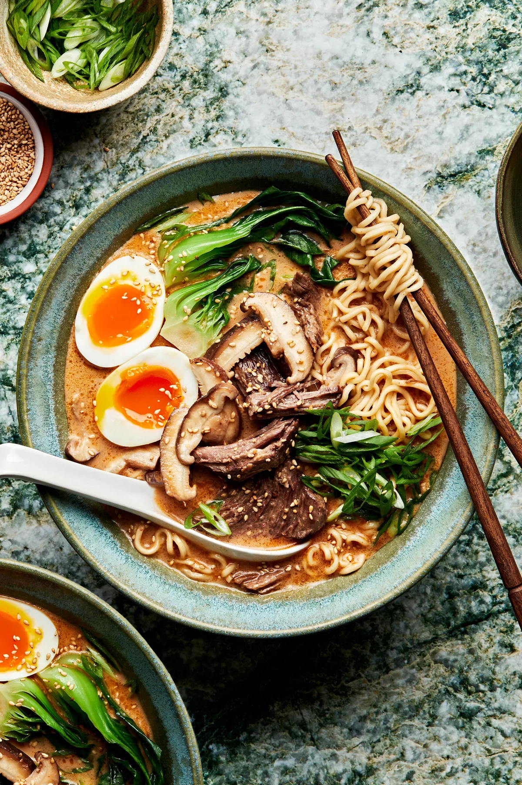

Home

Ramen
Ingredients
Mushrooms & Chicken
- 2 Tablespoons live oil, divided
- 2 Tablespoons butter, divided
- 8 Oz. mushrooms
- 1 large boneless/skinless chicken breast, about 3/4 lb.
- Salt and pepper
Soup
- 1/2 cup dry white wine
- 1 Tablespoon butter
- 3 cloves garlic, minced
- 6 Cups low sodium chicken broth
- 2 Tablespoons low sodium soy sauce
- 2 Teaspoons hot sauce
- 2 Teaspoons honey
- 3/4 Teaspoon toasted sesame oil
- 2 packets instan Ramen noodles, don't use flavor packets
- 6 leaves Bok Choy, roughly chopped
Seasonings
- 3/4 Teaspoons EACH: onion powder, mustard powder
- 1/4 Teaspoon ground ginger
- 1/8 Teaspoon white pepper
- 1 Pinch red pepper flakes
For Serving
- Green Onions
- Roughly chopped honey roasted peanuts
- Soft boiled eggs
Steps